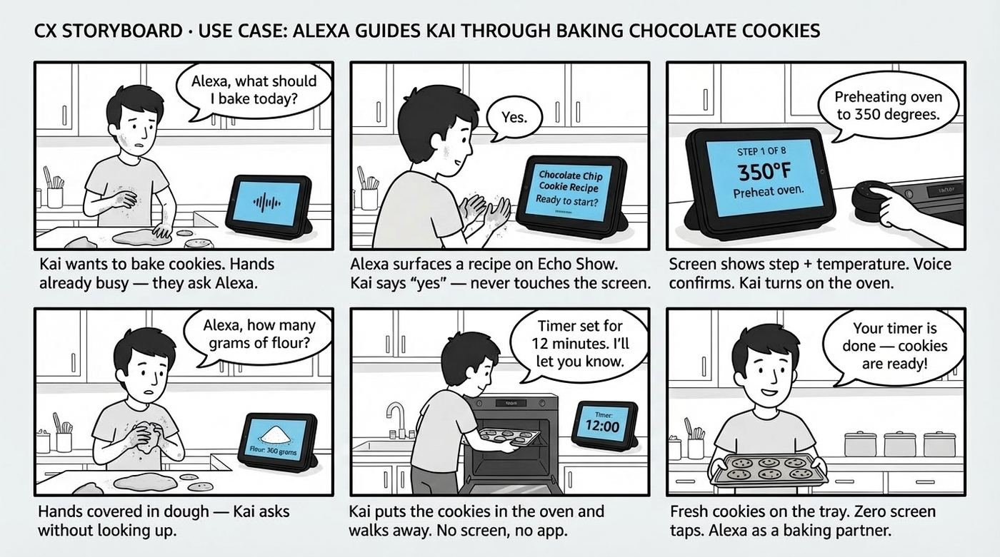
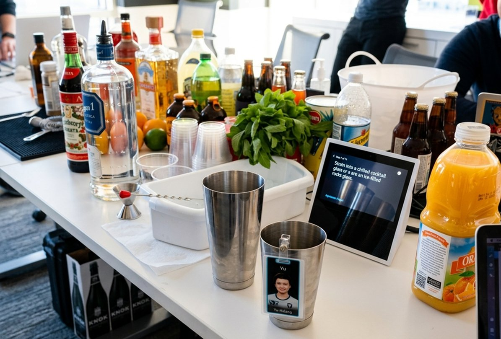
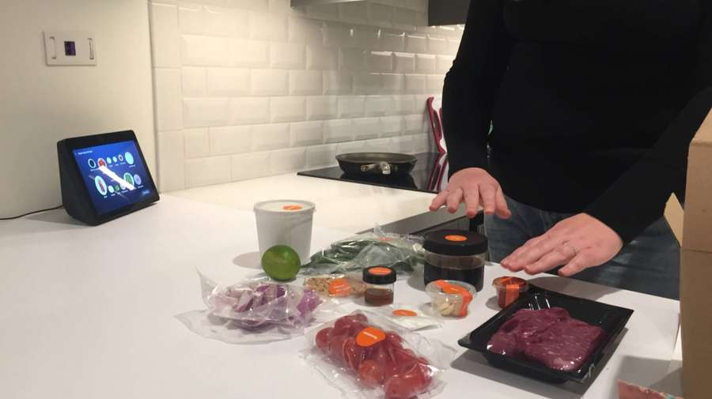
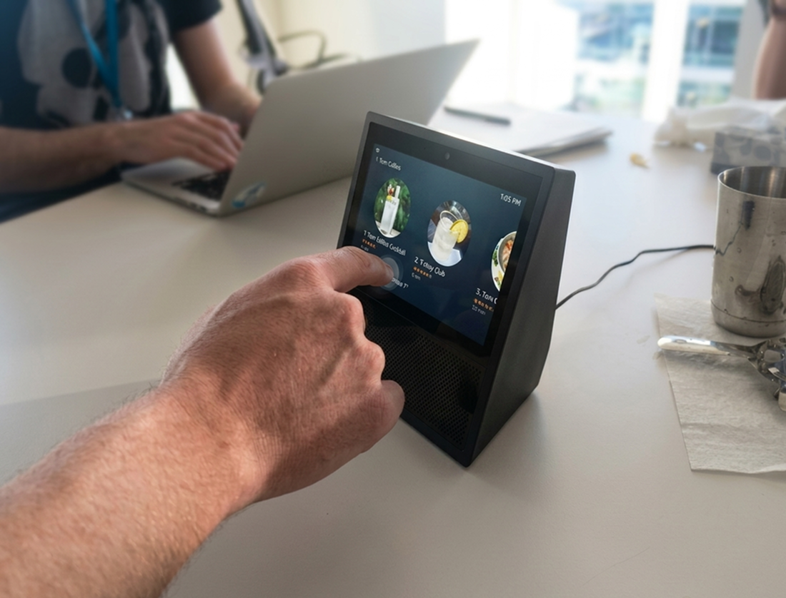
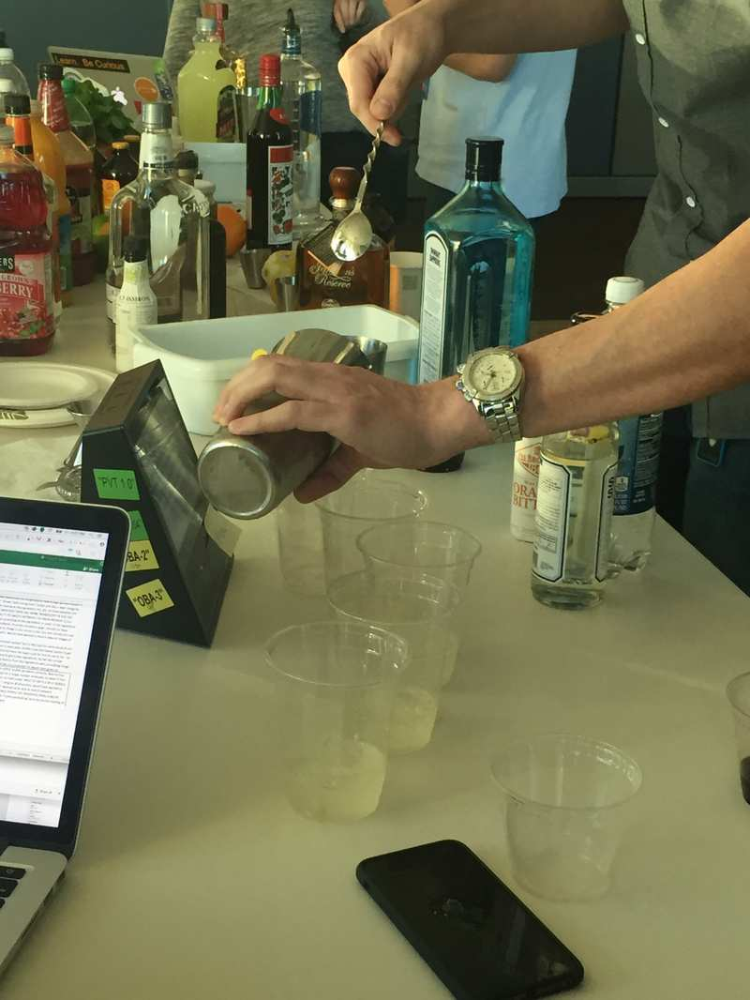
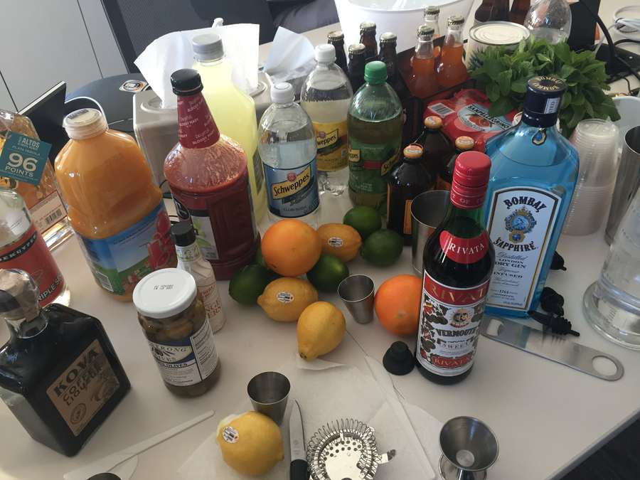
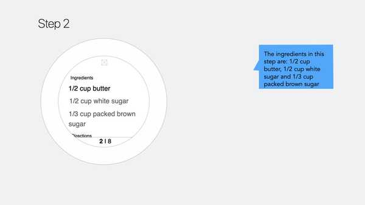
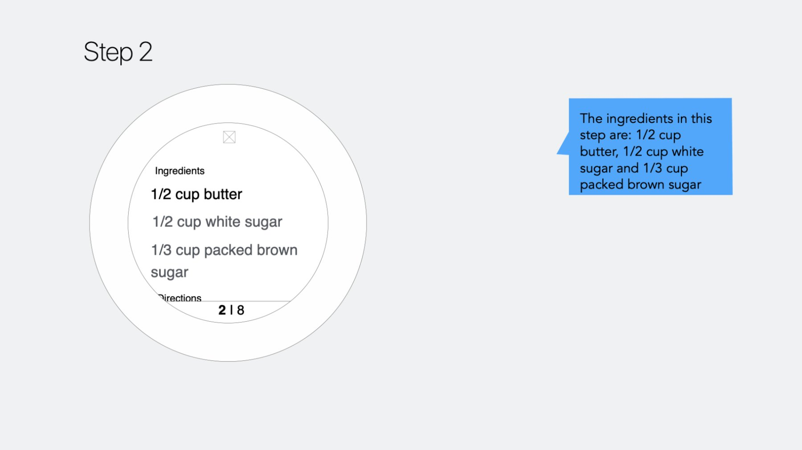
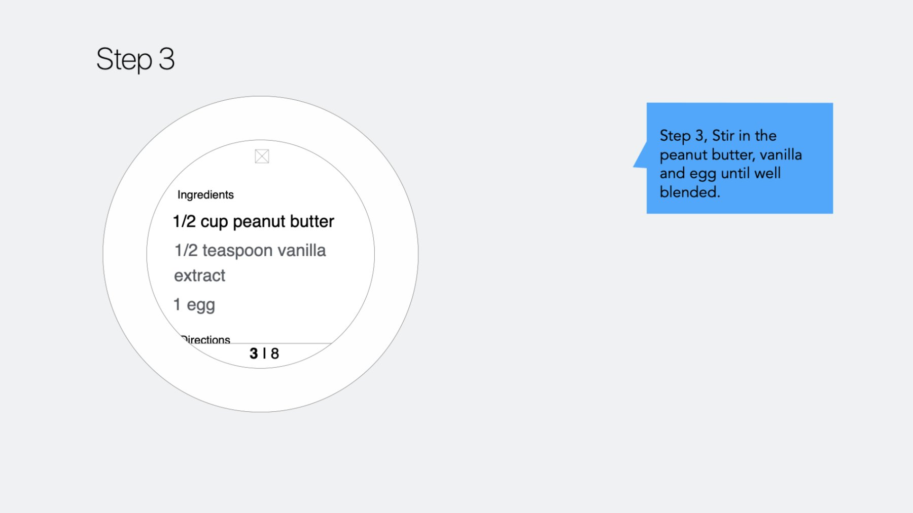

The Kitchen Is the Hardest Room to Design For
Cooking is one of the most cognitively and physically demanding domestic tasks. Hands are wet, floury, or covered in raw protein. A recipe on a phone becomes a liability — touched once, it darkens. Scrolled to the wrong step, you lose your place mid-chop.
When Alexa launched, voice-only instruction solved the hands problem — but created new ones. A single spoken step with no visual anchor is easy to mishear. And "Alexa, repeat step three" became the accidental UX benchmark nobody wanted.
Alexa Cook Along was the answer: a voice-first, visually-anchored cooking experience designed from the ground up as a multimodal product — before the word "multimodal" was in every product brief.
Meet Kai
To ground the design, we built a core scenario: Kai, someone who wants to bake cookies with hands already deep in dough — a perfect stress test for a hands-free, screen-free cooking experience.

Testing Where the Mess Happens
We didn't test Cook Along in a sterile lab. The cocktail-making sessions at Amazon Santa Clara were a deliberate stress test: high ingredient complexity, precise measurements, time pressure.

Real ingredients, real complexity — cocktail-making sessions at Amazon Santa Clara as a deliberate stress test.

User research session: observing how people interact with Echo Show in a real kitchen alongside meal kit preparation.



"When users had wet or occupied hands, they never reached for the screen — even when the voice instruction was unclear. The voice experience had to be fully self-sufficient."
Six Principles That Shaped Every Design Decision
Voice + Visual: Step by Step
Each step has a corresponding visual state on Echo Spot and a spoken Alexa response. Core principle: the screen shows the current fact, the voice explains the current action.



See It in Action
A working demo of Cook Along on Echo Spot — voice-guided, step-by-step cooking in a real kitchen context.
Alexa Cook Along demo — hands never touch the screen.
The Golden Utterances
Designing for voice means designing what people will actually say — not what the system expects.
"Cook Along wasn't a recipe reader. It was a cooking partner — something that responds when spoken to, stays quiet when not needed, and always knows where you are."
What Shipped — and What It Established
Cook Along shipped to 20M+ Alexa households across Echo Show and Echo Spot at first release in 2018.
Cook Along established the multimodal interaction model for sequential tasks on Alexa. The patterns — voice-led navigation, step-anchored visuals, cross-surface consistency — became the foundation subsequent Alexa experiences were built on.
It was an early proof of concept for ambient AI assistance: technology that doesn't demand your attention, but responds reliably when you need it.
The most meaningful outcome: the shift in how the team thought about Alexa. Before Cook Along, Alexa was a question-and-answer machine. After it, Alexa was a presence in the home.
What I'd Do Differently
I would push for longitudinal research earlier. Our in-kitchen sessions were invaluable but point-in-time. Tracking households over six weeks would have surfaced insights about habit formation after novelty wore off.
I'd also design failure states as first-class artifacts from day one — the moments Alexa misheard a quantity, or a user lost their place after a 20-minute pause, deserved dedicated attention earlier in the process.